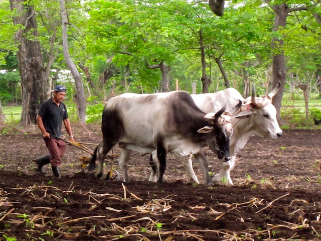
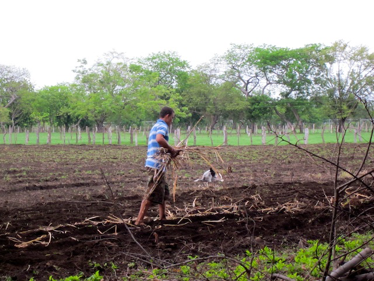
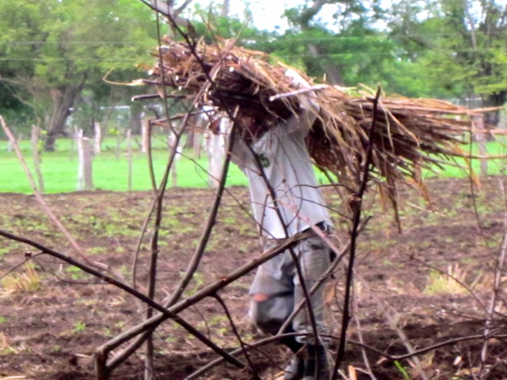
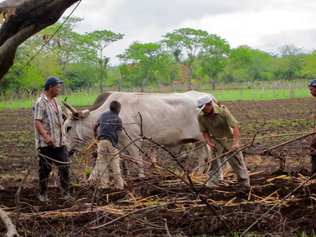
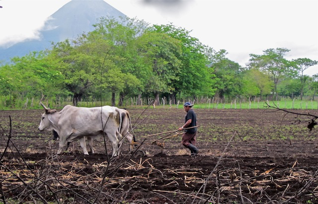
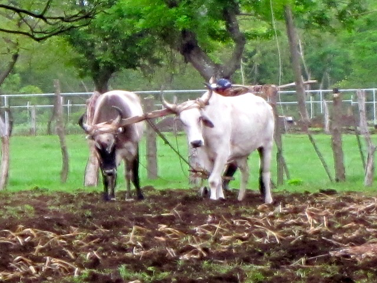
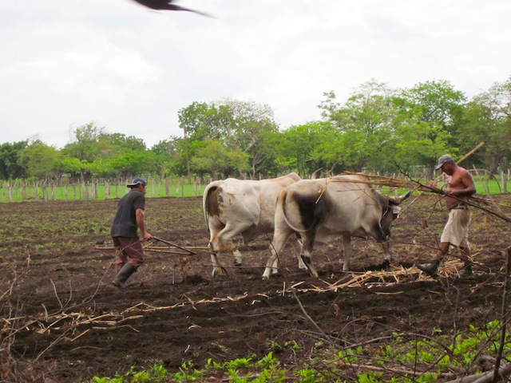
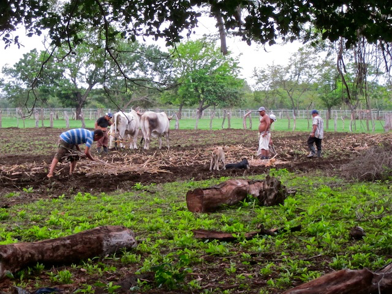

Unpublished Writing
The Plowman
June 11, 2013
Living a simple life of hard labor, our neighbor reminds me of the Plowman in the Canterbury Tales. He weaves his way through the fields, calling to his oxen, "Chele, Ya! Chele." (Chele is a nickname for white skin. "White, Go! White.") The plowman was the most recognized symbol of the poor in the medieval world and was associated with great virtue. Nicaragua has many plowmen of great virtue. Lacking high-tech farm equipment such as tractors, these hard-working men travel from field to field with their oxen teams helping their friends and neighbors prepare for the planting season.

Ploughing family farms promptly at the beginning of the rainy season is critical to ensuring household food security and farm livelihoods.

Once the field is furrowed, a worker places sugar cane reeds in the furrows.

They haul the cane on their backs.

Then, sharp machetes chop the cane into small pieces and it is covered with dirt.

The plowman takes excellent care of his oxen. One tractor costs as much as 30 pairs of oxen that can do the work of three tractors. Animal traction is less expensive, more environment friendly, and more flexible than tractors.

The oxen take a rest. On average, a bovine needs 20-30 pounds of forage a day. These oxen are strong and healthy.
Dry season feeding is survival management for the cattle. It is estimated that cattle lose 50% of the weight gained during the rainy season. Our neighbor understands the importance of growing cane for the dry season. The cane tops are cut and stored once they are mature and used to feed the cattle during the long, six months of the dry season.

It's a busy morning in the field. The dogs roll and run through the field. The sharp machetes slice through the cane, and the virtuous plowman furrows the fertile earth for a blessed harvest during the dry season.

This story is one of many. The full journey is in the book.
Get The Monkey Lady's Gift